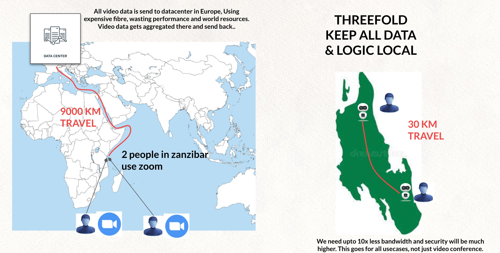

The Internet Needs To Be Local

The Internet today is constructed in a centralized way. The hyperscale data centers that form the backbone of the Internet's infrastructure play a massive role in our digital lives, and they are often located far from users, particularly those living in developing countries or regions. Each time we take an online action such as posting a photo or sending a message, the data is transmitted from our device to that centralized data center, and to the person or persons on the other end. So, you can begin to see how proximity to these servers plays a role in the end user experience.
Internet bandwidth refers to the amount of information or data that can be sent over a connection in a measured amount of time. Bandwidth is often mistaken for speed, but they are not the same. Whereas bandwidth is how much information you receive in a given time, speed is how fast that information is received.
Let's take the example of filling a swimming pool with water. If the hose has a wide circumference, more water can flow than if the hose were narrow. In this instance, water is the bandwidth and the rate at which the water flows is the speed.
There are many factors that go into both bandwidth and speed. An end-to-end network path usually consists of multiple connections, each with different bandwidth capacity. And the link with the lowest bandwidth can limit the overall capacity of all connections in the path. When data travels shorter distances, this is less of a factor. Network congestion (usage) is also a major factor. And it's pretty clear to see how by traveling long distances, this would become a bigger problem.
TODO: Kristof please review, this should be moved to 11.1.3 Bandwidth Problem section
For more info about how the Internet works see here.